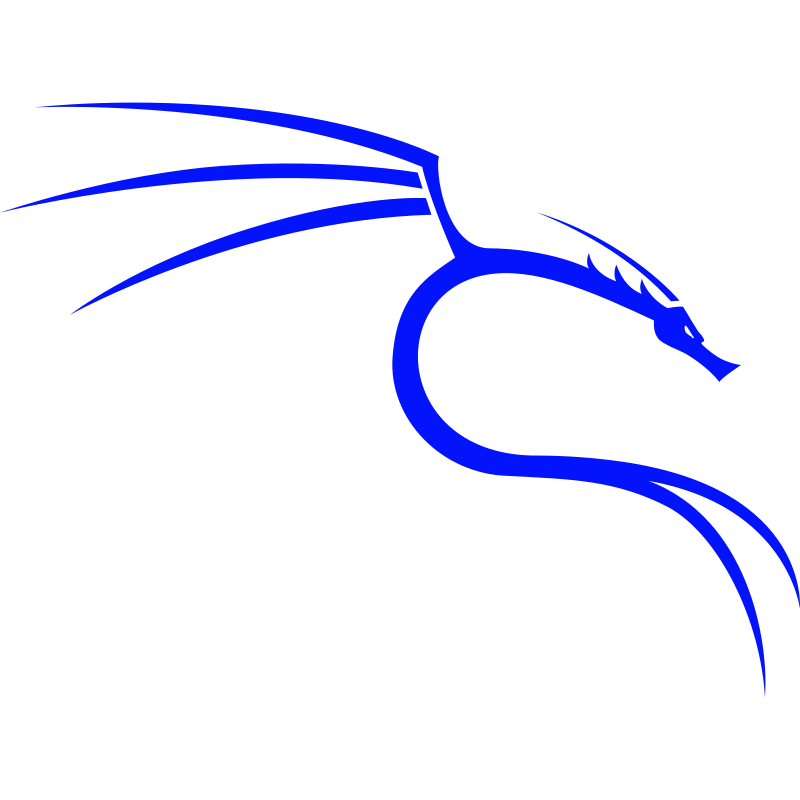
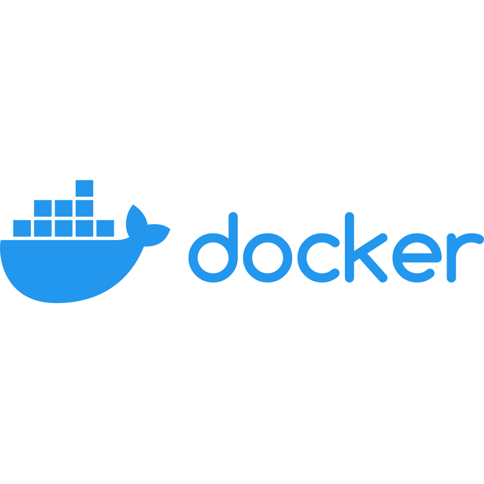

Electromecánico de base, técnico ASIX, y actualmente finalizando el Máster en Ciberseguridad en la UOC. Apasionado por la tecnología desde los tiempos del Commodore 64.
Especializado en automatización con Power Automate y Power BI, administración de sistemas Linux, Docker y seguridad de redes.


Materiales y guías para formación en sistemas, redes y ciberseguridad. Experiencia transmitiendo conocimiento técnico de forma clara.
Automatización con Power Automate, scripts en Python y Bash, desarrollo web. Soluciones que eliminan tareas repetitivas.
Detección de amenazas, análisis de tráfico, Snort, Rsyslog, revisión de logs. Formación continua en el Máster UOC.
→ Informe A4 – Cazadores de amenazasPower Automate, Power BI y Docker en entornos empresariales. Sistemas que trabajan solos mientras tú descansas.
Canal de YouTube dedicado a la informática retro. Commodore 64, Amstrad CPC, ZX Spectrum. Para todos los que empezaron con una cinta de cassette y un televisor.
sound('bd sn cp').slow(4).stutter(3)